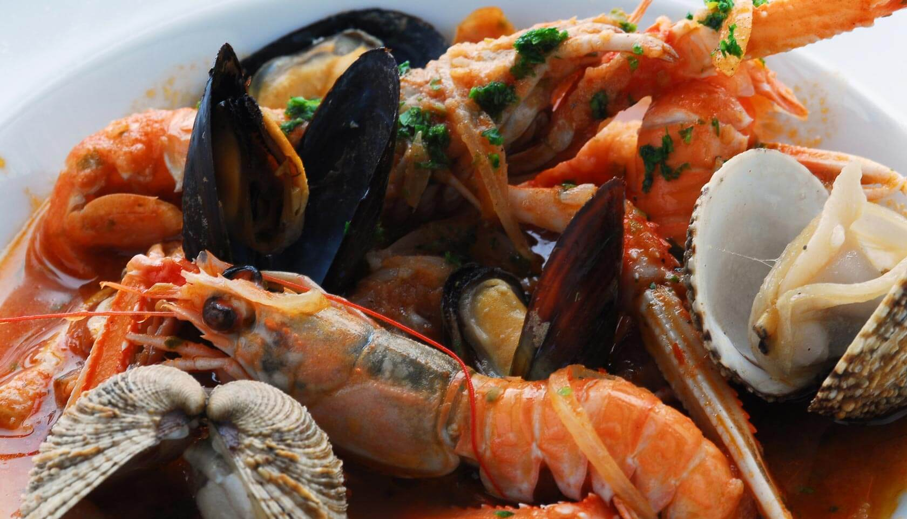
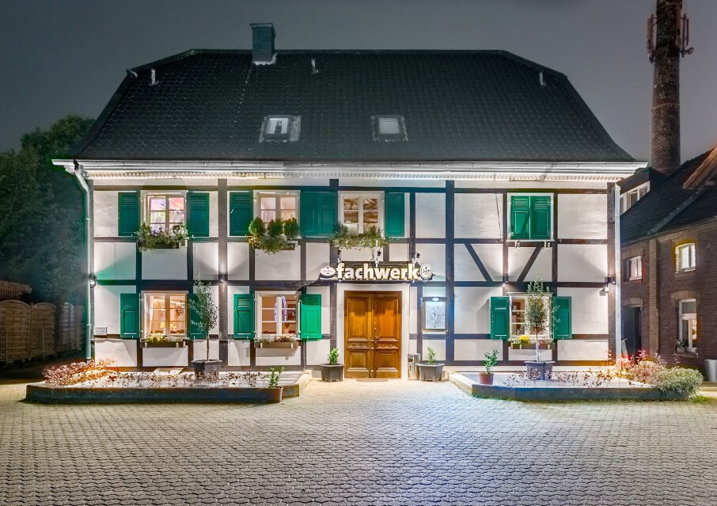
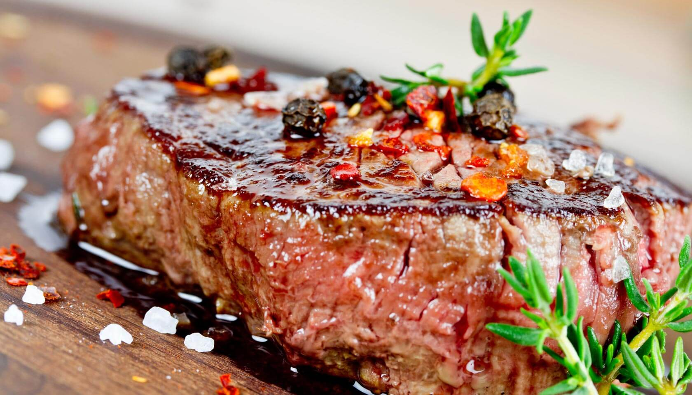
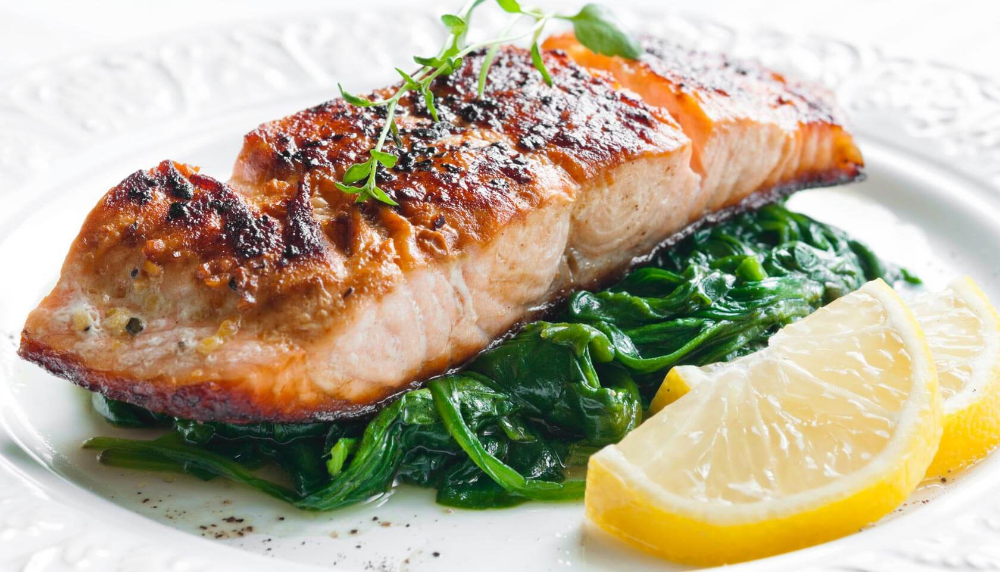
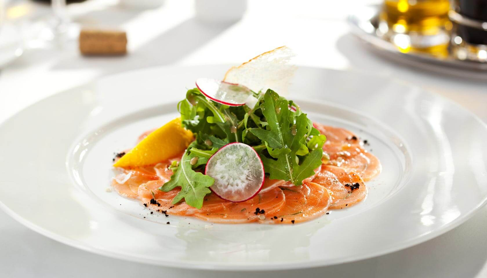
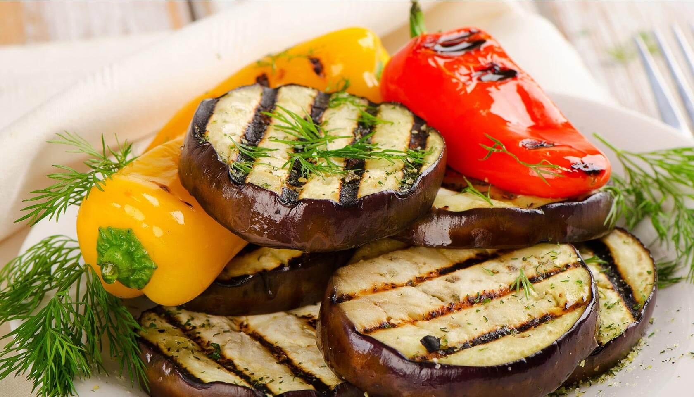
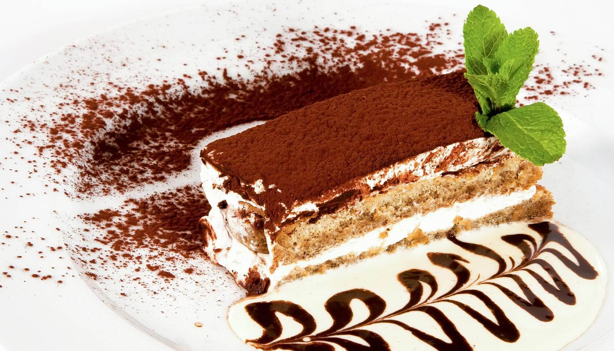
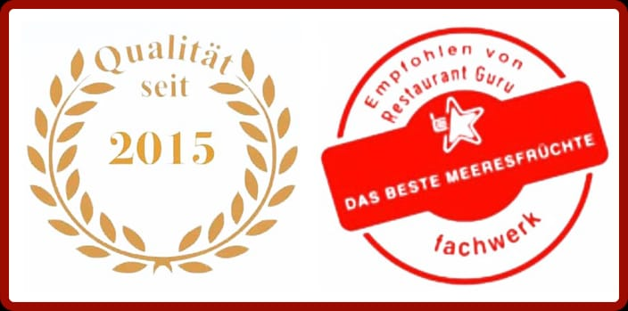
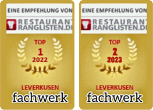

Kroatische Art
Buzara Frutti di Mare
Meeresfrüchte in Tomaten, Kräutern & Knoblauch — wie an der dalmatinischen Küste.
18,90 €Restaurant · Bergisch Neukirchen · Leverkusen
Genusskultur seit 2015
Mediterrane Küche, frischer Fisch & Black-Angus-Steaks — serviert im Herzen eines historischen Fachwerkhauses.

Willkommen im fachwerk
Hinter jahrhundertealten Balken verbinden wir bergische Gemütlichkeit mit mediterraner Lebensfreude — Naturstein, Kerzenlicht und der Duft von frischen Kräutern inklusive.
Seit 2015 empfangen wir unsere Gäste in familiärer Atmosphäre. Küchenchefin Tajana Jurić und ihr Team bereiten jedes Gericht persönlich zu — mit frischem Fisch vom täglichen Markt, erstklassigem Black-Angus-Fleisch und regionalem sowie mediterranem Gemüse von Lieferanten der Spitzengastronomie.
Unsere Klassiker
Sechs Gerichte, für die unsere Gäste immer wiederkommen.

Meeresfrüchte in Tomaten, Kräutern & Knoblauch — wie an der dalmatinischen Küste.
18,90 €
Zartes Black-Angus-Filet, auf den Punkt gegrillt — mit Kräuterbutter oder Trüffelsauce.
34,90 €
Fangfrischer Lachs auf Blattspinat, mit Zitrone und feinem Kräuteröl.
26,90 €
Hauchzarte Klassiker — vom Rinderfilet, Thunfisch oder als Duett mit Vitello Tonnato.
16,90 €
Sonnengereiftes Gemüse mit Ziegenkäse, Olivenöl und frischen Kräutern.
18,90 €
Hausgemacht nach Familienrezept — der perfekte Abschluss eines Abends.
8,90 €„Jeder Teller, der unsere Küche verlässt, geht durch meine Hände. Kochen ist für mich Gastfreundschaft — man schmeckt, ob mit Liebe gekocht wurde."
Mehr als ein Abendessen
Laue Sommerabende zwischen historischen Mauern — mit einem Glas Wein unter freiem Himmel.
Geburtstage, Familienfeste, Firmenessen: Unsere Empore bietet den privaten Rahmen für Ihre Feier.
Unser Fisch kommt vom täglichen Markt, Brot backen wir selbst — Saisonales wechselt mit dem Kalender.
Ausgezeichnet
Restaurant Guru kürte das fachwerk zum Nr.-1-Fischrestaurant in Leverkusen und empfiehlt unsere Meeresfrüchte als die besten der Stadt. Auch restaurant-ranglisten.de führt uns unter den empfohlenen Adressen der Region.


Reservierung & Anfahrt
Rufen Sie uns an — wir finden den passenden Tisch, ob romantisches Dinner oder große Tafel.
02171 – 43329 info@fachwerk-leverkusen.de